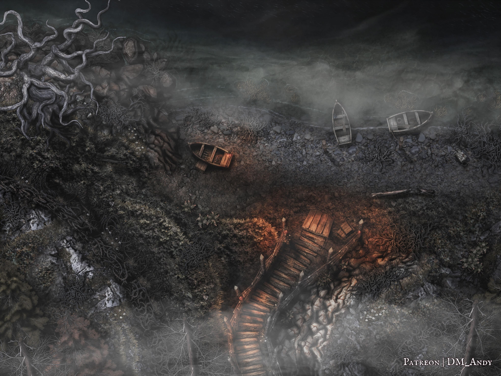

_Uma aventura para cinco personagens de 4º nível._
Neste arco, se os jogadores desafiaram a vontade do Barão na primeira manhã após entrarem em Vallaki, se eles ou Ireena foram vistos visitando os refugiados barovianos do lado de fora do portão leste, ou se manifestaram sua antipatia pelo Barão Vallakovich a Nikolai ou Karl Wachter na Estalagem Água Azul, os jogadores recebem uma carta entregue por Ernst Larnak, mensageiro e espião de Lady Fiona Wachter, convidando-os a jantar em Wachterhaus naquela noite.
Quando os jogadores chegam a Wachterhaus naquela noite, Lady Wachter lhes dá as boas-vindas a Vallaki e trata de lhes oferecer vinho, comida e conversa. Ao longo do serão, ela os interroga sutilmente a respeito de suas capacidades e objetivos, enquanto trabalha para convencê-los de que o Barão Vargas Vallakovich é uma ameaça que precisa ser deposta.
Se Lady Wachter concluir que os jogadores são aliados adequados, ela lhes pede que matem o braço direito do Barão, Izek Strazni, e que lhe tragam a cabeça dele. Lady Wachter promete a segurança dos refugiados barovianos, além de um pagamento adicional, caso os jogadores tenham êxito.
Se os jogadores aceitarem a incumbência de Lady Wachter, Ernst lhes fornece uma garrafa de vinho envenenado para embriagar Izek, bem como informações que os jogadores podem usar para seguir o rastro de Izek e assassiná-lo. Os jogadores podem encontrar Izek na praça central de Vallaki e, por fim, segui-lo até a margem do Lago Zarovich, onde—se os jogadores tiverem conseguido plantá-lo—ele bebe o vinho envenenado.
Se os jogadores entregarem a cabeça decepada de Izek a Lady Wachter, ela visita o Barão Vallakovich sob o manto da escuridão na noite seguinte, acompanhada de um trio de fanáticos de culto. Ao ver a cabeça de Izek, o Barão se rende pacificamente ao governo de Lady Wachter. Na manhã seguinte, o Barão abdica publicamente em favor de Lady Wachter na praça central de Vallaki.
Se os jogadores visitarem Wachterhaus antes de receberem um convite formal, Lady Wachter terá o maior prazer em tomar chá com eles imediatamente, caso demonstrem interesse em derrubar o Barão. Do contrário, seu criado Haliq marca uma hora para que se encontrem com ela no dia seguinte.
F1. A Estalagem Água Azul
Esta cena ocorre no Capítulo 5: Área N2.
Se os jogadores desafiaram o Barão Vallakovich ou de alguma outra forma intervieram em favor de Willemina em sua primeira manhã em Vallaki, se eles ou Ireena visitaram o acampamento dos refugiados barovianos em algum momento durante a estadia em Vallaki, ou se os jogadores manifestaram sua antipatia pelo Barão Vallakovich a Nikolai ou Karl Wachter na Estalagem Água Azul, Urwin Martikov lhes entrega um envelope quando retornam à Estalagem Água Azul naquela mesma noite.
O envelope é endereçado ao jogador que primeiro se apresentou a Nikolai e Karl Wachter na noite de sua chegada ou, caso os jogadores não tenham interagido com Nikolai e Karl no salão da taverna, ao jogador que primeiro se identificou aos guardas dos portões de Vallaki naquele mesmo dia.
Urwin não sabe de quem é a carta, mas pode dizer aos jogadores que ela foi entregue por um homem de aparência desleixada, vestindo uma capa marrom enlameada, porém de boa feitura, que insistiu muito para que os jogadores a recebessem. (O homem era Ernst Larnak, o espião de Lady Wachter.)
O envelope contém a seguinte carta, com o espaço em branco preenchido com o nome do jogador a quem o envelope foi endereçado:
Se os jogadores perguntarem a Urwin sobre Lady Wachter, ele pode compartilhar todas as informações a respeito dela descritas em Lendas de Vallaki (p. 96). Contudo, em vez de descrever a "filha louca" de Lady Wachter, Urwin conta apenas que Lady Fiona tem uma filha, Stella Wachter, que Lady Wachter tem mantido reclusa nos domínios de Wachterhaus, por razões desconhecidas, nos últimos tempos. Ele também pode contar que, segundo a lenda local, os pais e o irmão mais velho de Lady Wachter morreram num acidente misterioso quando ela era adolescente. (Urwin, que só se mudou para Vallaki dez anos atrás, não pode confirmar nem desmentir a história.)
F2. Wachterhaus
Esta cena ocorre no Capítulo 5: Área N4.
Wachterhaus é em grande parte como descrita em N4. Wachterhaus (p. 110), mas com as seguintes mudanças:
O Quarto de Stella. Stella Wachter não arranha a porta nem chama pelos jogadores em N4l. Corredor Superior (p. 113). Se encontrada, ela está de olhar vazio e não responde, incapaz de falar com os jogadores ou mesmo de se mover por vontade própria. (Isso acontece porque ela perdeu a alma, atualmente aprisionada no Plano Etéreo. Veja Arco H - A Alma Perdida para mais informações.)
Além disso, o quarto de Stella não é nem mofado nem escuro, e sua cama não tem correias de couro. Em vez disso, o quarto é bem decorado, com um tapete lilás trançado, uma poltrona confortável de padrões florais e uma pequena estante com uma coleção de gatos entalhados em madeira sobre ela. (Os gatos foram esculpidos por seu irmão mais velho, Karl, como presentes de melhoras após a doença de Stella.)
Depósito. O manuscrito e o tratado guardados no baú de ferro em N4q. Depósito (p. 114) agora se intitulam Vozes da Névoa (um texto religioso escrito por Lady Fiona Wachter, que atesta que o culto a Ezra, deusa das Névoas, pode trazer paz, entendimento e solenidade) e O Grimório dos Sussurros da Noite, um livro de rituais e texto religioso dedicado a Mãe Noite, escrito pela bruxa Baba Lysaga.
Quarto Principal. O falecido marido de Lady Wachter, Nikolai, foi enterrado no cemitério após sua morte, vários anos atrás, e não está mais na cama de Lady Wachter em N4o. Quarto Principal (p. 113).
Além disso, a prateleira alta em N4o. Quarto Principal (p. 113) também sustenta uma maquete de Wachterhaus com trinta e três centímetros de altura, feita de gravetos, argila e palha pintada. O baú de ferro ao lado dela ainda contém os ossos de Leo Dilisnya, embora Lady Wachter não conheça seu significado.
Lady Wachter. Lady Wachter ainda usa as estatísticas de um sacerdote. Contudo, ela tem uma lista diferente de magias preparadas:
- Truques (à vontade): luz (light), dobre fúnebre (toll the dead), taumaturgia (thaumaturgy)
- 1º nível (4 espaços): comando (command), santuário (sanctuary), perdição (bane)
- 2º nível (3 espaços): cegueira/surdez (blindness/deafness), zona da verdade (zone of truth), imobilizar pessoa (hold person)
- 3º nível (2 espaços): animar mortos (animate dead), guardiões espirituais (spirit guardians)
F2a. Bem-Vindos a Wachterhaus
Conforme os jogadores se aproximam de Wachterhaus, leia a descrição a seguir em vez do texto em N4. Wachterhaus (p. 110):
Um jardim denso, cheio de ervas e trepadeiras, se estende ao lado deste solar largo de telhado vermelho. Um teto arqueado pende pesado sobre empenas sulcadas, e paredes cobertas de musgo cedem e se abaúlam sob o peso da vegetação. Uma bela porta pintada de vermelho se ergue na entrada da casa, com a metade superior guarnecida de vidro fosco.
Quando os jogadores batem à porta ao chegar, o criado de Lady Wachter, Haliq, abre e lhes dá as boas-vindas calorosamente, usando a mesma forma de tratamento empregada na carta de Lady Wachter. Haliq, um mordomo formal e impecável, primeiro se oferece para guardar os casacos e demais pertences dos jogadores, que ele acomoda no armário leste de N4a. Porta da Frente e Vestíbulo (p. 110).
Haliq então conduz os jogadores até N4b. Escadaria (p. 110), de onde eles sentem um sortimento de aromas deliciosos, tanto doces quanto salgados, vindos de N4c. Cozinha (p. 112). (Um jogador que espiar pela porta aberta da cozinha pode ver o cozinheiro, Dhavit, trabalhando arduamente no preparo de um pernil de cordeiro assado e legumes refogados variados.)
Haliq então guia os jogadores pela N4j. Sala de Jantar (p. 112) e os convida a se sentarem na N4i. Sala de Estar (p. 112). Depois de definir quais jogadores desejam taças de vinho, Haliq lhes garante que Lady Wachter estará com eles em breve e se retira.
Os jogadores têm alguns instantes para observar e comentar o que os cerca. Caso investiguem as portas para N4k. Escritório (p. 112) ou N4h. Aposentos dos Criados (p. 112), descobrem que ambas estão trancadas. Ao longo de toda a noite, Ernst Larnak, o espião de Lady Wachter, escuta em silêncio as conversas dos jogadores a partir do escritório, conforme descrito em N4i. Sala de Estar (p. 112).
F2b. Conhecendo os Wachter
Pouco depois de os jogadores chegarem à sala de estar, eles percebem que uma jovem de chinelos e camisola branca, de cerca de dezesseis anos, está parada no vão da porta aberta que dá para a escadaria e a entrada principal. A jovem parece encarar o vazio na direção deles, mas não se move nem faz contato visual—nem mesmo se alguém se aproximar.
Alguns instantes depois de os jogadores notarem a jovem, Nikolai Wachter surge cambaleando atrás dela, vindo da escadaria. Presumindo que os jogadores não desviem a conversa, a cena se desenrola assim:
- Nikolai cumprimenta a jovem chamando-a de "Stella" e se pergunta em voz alta, preocupado, como ela foi parar ali.
- Nikolai nota os jogadores e se desculpa profusamente, garantindo-lhes que vai tirar a irmãzinha do caminho deles.
- Se já tiver encontrado os jogadores na Estalagem Água Azul, Nikolai pode então reconhecê-los e cumprimentá-los de forma mais pessoal—com calor ou frieza, dependendo da interação anterior. Em seguida, ele pergunta aos jogadores por que vieram a Wachterhaus.
- Lady Wachter chega vinda da cozinha e repreende Nikolai de leve por ter deixado Stella perambular.
- Nikolai diz a ela que pretende levar Stella para uma breve caminhada pelos jardins, e o rosto de Lady Wachter se suaviza.
- Lady Wachter lembra Nikolai de que a noite está fria e que ele deve garantir que Stella se agasalhe bem e que não tropece nem se machuque.
- Nikolai concorda e parte, conduzindo uma Stella de olhar vazio para fora pela porta da frente.
Lady Wachter então entra na sala de estar e se desculpa com os jogadores pelo incômodo. Ela se apresenta como Lady Fiona Wachter e dá as boas-vindas formais aos jogadores em Wachterhaus, agradecendo-lhes por terem aceitado seu convite. Ela os convida a se acomodarem nos sofás, caso ainda não o tenham feito, e a ficarem à vontade.
 "Lady Fiona Wachter" por Caleb Cleveland. Apoie-o no Patreon!
"Lady Fiona Wachter" por Caleb Cleveland. Apoie-o no Patreon!
Haliq chega logo em seguida trazendo uma bandeja de taças de vinho para quem as pediu. Ele também oferece uma taça a Lady Wachter, que recusa e pede, em vez disso, uma dose de conhaque. A pedido de Lady Wachter, Haliq informa ao grupo que o jantar será servido em quinze minutos. Lady Wachter lhe agradece, e ele se curva e se retira.
Informações de Interpretação Ressonância. Lady Wachter deve inspirar desconfiança por sua lealdade a Strahd, respeito a contragosto por sua veia de racionalidade pragmática, afeição por sua dedicação aos filhos e pena pela tragédia de sua família.
Emoções. Lady Wachter na maior parte do tempo se sente preocupada, apreensiva, irritada, melancólica, satisfeita, pensativa, determinada, severa ou (com os filhos) compassiva e amorosa.
Motivações. Lady Wachter quer manter Vallaki—e sobretudo seus filhos—a salvo do perigo. Para isso, ela espera ver o Barão Vargas Vallakovich removido do poder e assegurar a Strahd von Zarovich que Vallaki não representa ameaça alguma ao seu domínio.
Inspirações. Ao interpretar Lady Wachter, canalize Moiraine Damodred (A Roda do Tempo), Olenna Tyrell (Game of Thrones), Minerva McGonagall (Harry Potter) e Lady Jessica (Duna).
Informações de Personagem Persona. Para o mundo, Lady Wachter é uma nobre fria, astuta e cordial. Para aqueles em quem confia, Lady Wachter é uma defensora melancólica, irônica e, ainda assim, ferozmente determinada daquilo que considera o bem de Vallaki. Somente a própria Lady Wachter compreende a profundidade do amor que sente pelos filhos—e o quanto sua fé e sua esperança estão despedaçadas.
Moral. Numa luta, Lady Wachter tentaria negociar ou fugir, buscando qualquer meio necessário para aplacar as hostilidades, até mesmo a rendição incondicional. Se, contudo, fosse necessário para salvar a própria vida ou a dos filhos, ela lutaria até a morte com ferocidade amarga.
Relações. Lady Wachter é viúva do falecido Nikolai Wachter I e mãe de Nikolai Wachter II, Karl Wachter e Stella Wachter. Ela é a empregadora do espião Ernst Larnak e uma crítica declarada do Barão Vargas Vallakovich.
F2c. Drinques na Sala de Estar
Durante a conversa a seguir, Lady Wachter pode compartilhar as seguintes informações:
- A jovem era Stella Wachter, sua filha e caçula. Stella sofre de uma doença misteriosa—uma que deixou sua mente em estado vegetativo nos últimos dois meses. Lady Wachter tentou todos os meios ao seu alcance para curar a enfermidade de Stella, mas nenhum deu certo.
- O homem com Stella era Nikolai Wachter II, filho mais velho de Lady Wachter. Nikolai leva o nome do pai, Nikolai Wachter, que morreu de uma doença degenerativa três anos atrás.
- Nikolai e seu irmão mais novo, Karl, podem ser uns brutamontes travessos e problemáticos às vezes, mas Lady Wachter acredita que ambos têm bom coração—ainda que bastante desorganizados. (Ela é afeiçoada aos filhos, mas lamenta que os dois tenham se tornado indomados e afoitos por emoções depois da morte do pai.)
Lady Wachter também tenta puxar conversa fiada com os jogadores, fazendo perguntas sobre suas histórias, seus lares, seus interesses e os meios pelos quais chegaram a Vallaki e ao vale de Barovia. Ao longo da conversa, ela elogia qualquer armadura, armamento ou foco arcano ou sagrado visível, e sonda de leve os jogadores acerca de seu treinamento nas artes marciais, arcanas ou sagradas.
Lady Wachter também pode responder às perguntas dos jogadores da seguinte maneira:
Se perguntarem por que ela decidiu convidá-los para jantar, Lady Wachter observa apenas que forasteiros são uma visão rara em Vallaki e que ficou impressionada com os relatos sobre a aparente competência deles. Ela comenta que, "em tempos tão conturbados, é sempre sábio encontrar amigos"—e que, para o olhar arguto, amigos podem ser encontrados até nos lugares mais inesperados.
Se perguntarem se ela serve a Strahd, Lady Wachter faz uma pausa, pesa cuidadosamente as palavras e responde com calma que é, e sempre foi, uma realista. Por mais preferível que alguns considerem viver num reino não governado por Strahd von Zarovich, os vallakianos vivem justamente num reino assim, e precisam aprender a conviver com isso. Ao contrário de Vargas, Strahd é, no mínimo, capaz de raciocinar.
Se perguntarem como ela chegou à sua posição, Lady Wachter conta que nem sempre foi a herdeira da Casa Wachter. Seu irmão mais velho, Frederich Wachter, sempre esteve destinado a herdar a casa e o título da mãe. Ainda adolescente, Fiona brigava com frequência com a mãe e o irmão—e, numa dessas ocasiões, fugiu de casa num acesso de fúria teimosa. Ela embrenhou-se na Svalich Woods, onde certamente teria morrido se não tivesse sido encontrada por uma velha chamada Lysa. Fiona permaneceu no chalé de Lysa por seis meses, até saber que seus pais e seu irmão haviam perecido num acidente trágico. Fiona voltou a Vallaki contra o conselho de Lysa e retomou a posição de sua família.
Se perguntarem quais são as responsabilidades de um burgomestre, Lady Wachter explica que os principais deveres de um burgomestre são resolver disputas, manter os registros da cidade e coordenar suas defesas. Eles também recolhem impostos para o Castelo Ravenloft, embora já faça mais de um século que estes não são cobrados. Burgomestres também aumentam impostos para pagar guardas; contudo, seus poderes legislativos são limitados — eles têm apenas o poder que a cidade lhes concede.
Se perguntarem sobre as diferentes facções e localidades de Barovia, Lady Wachter pode fornecer as seguintes informações:
- Forest Folk. "São descendentes dos habitantes originais do vale, que hoje adoram o Conde von Zarovich como um deus. Usam Yester Hill como local de reunião, mas vivem espalhados por toda a Svalich Wood."
- Argynvostholt. Lady Wachter compartilha as informações de Lendas de Vallaki (p. 96).
- O Templo Âmbar. Lady Wachter pode contar que já ouviu falar de uma "ordem de cavaleiros" que habitava o solar abandonado a oeste, e que se dizia guardar um lugar chamado "Templo Âmbar". (Ela soube disso por sua mentora, a bruxa do pântano Baba Lysaga, a quem se refere apenas como "Lysa".) Ela, porém, sabe pouco além disso.
- O Bando de Lobisomens. "Um agrupamento incivilizado de brutamontes sedentos de sangue. A agressividade deles se intensificou nos últimos tempos, receio, mas as muralhas e a prata de Vallaki nos mantiveram a salvo." (Lady Wachter não sabe onde fica o covil do bando e não sabe o bastante para especular.)
A verdadeira identidade de "Lysa" é Baba Lysaga, a bruxa do pântano do Capítulo 10: As Ruínas de Berez (p. 161). A história de Fiona é verdadeira—quando jovem, ela fugiu de casa e encontrou refúgio com Baba Lysaga. Por seis meses, integrou as fileiras das bruxas em treinamento de Lysaga, muitas das quais hoje servem a Strahd em K56. Caldeirão (p. 72), no Castelo Ravenloft. Durante esse tempo, Fiona lutou, sob a tutela de Lysaga, para "ouvir a voz" de Mãe Noite, tarefa que jamais chegou a cumprir.
Ao saber da morte de sua família, Fiona escolheu voltar a Vallaki para reivindicar seu direito de nascimento. Baba Lysaga não recebeu bem a notícia e advertiu Fiona de que sua partida seria tratada como uma traição pessoal—e que ela seria banida de Berez para todo o sempre por essa escolha. Ainda assim, Fiona voltou a Vallaki, levando consigo o pequeno grimório que Baba Lysaga lhe dera como lembrança de seus estudos.
Em sua primeira noite na Wachterhaus vazia e silenciosa, Fiona ajoelhou-se no quarto dos pais—agora seu, como senhora da casa—e rezou, em prantos, a Mãe Noite, pedindo orientação. Quando uma voz lhe falou, Fiona perguntou, incrédula, se havia enfim escutado a voz de Mãe Noite.
A voz—feminina, suave e ainda assim melancólica—identificou-se, em vez disso, como Ezra, deusa das Névoas, e ofereceu a Fiona um consolo silencioso em seu momento de dor. Desde então, Fiona é uma devota discreta, porém dedicada, de Ezra, e não desconfia de que Ezra é apenas um disfarce usado pelos Poderes Sombrios.
O Jantar É Servido
Quando a conversa dos aperitivos chega ao fim, Haliq entra novamente na sala para anunciar que o jantar está servido. Enquanto os jogadores se sentam, Dhavit e as duas criadas de Lady Wachter, Madalena e Amalthia, põem à mesa um sortimento de pratos fartos e de dar água na boca: um pernil de cordeiro assado, legumes refogados, batatas cozidas e temperadas e pão fresco com manteiga e queijos.
F2d. O Problema Vallakovich
Enquanto os jogadores jantam, Lady Wachter faz as seguintes perguntas:
- O que eles acham de Vallaki, considerando o tempo que passaram na cidade até agora?
- O que acham das políticas e da cultura da cidade, e como se comparam às de suas terras natais?
Conforme a conversa avança, Lady Wachter comenta que ouviu falar das ações dos jogadores nas ruas da cidade na manhã anterior e que ficou impressionada com a disposição deles de desafiar a vontade do Barão. (Se os jogadores mencionarem outras aventuras dentro das muralhas de Vallaki, como um confronto com Volenta na Loja do Fabricante de Caixões, Lady Wachter fica devidamente impressionada.)
Caso os jogadores demonstrem oposição ao Barão, Lady Wachter confessa que ultimamente se viu tomada por graves dúvidas quanto à aptidão dele para governar. Ela pode compartilhar as seguintes informações sobre o Barão Vargas Vallakovich:
- A família Vallakovich governa Vallaki desde que seu primeiro patriarca, Boris Vallakovich, fundou a cidade há quase quinhentos anos. Os Vallakovich alegam ter sangue real nas veias e sempre se consideraram superiores a todos os demais no vale—e o Barão atual não é diferente.
- O Barão Vargas Vallakovich chegou ao poder como burgomestre há onze anos, quando seu pai, o Barão Valentin Vallakovich, faleceu durante o sono. (Na época, Valentin mal havia completado cinquenta anos e gozava de saúde quase perfeita. Fiona sempre alimentou suas suspeitas, mas nenhuma prova de crime jamais veio à tona.)
- Vargas acredita firmemente na superstição de que o Diabo Strahd chegou como punição pelos pecados dos ancestrais dos barovianos. Por isso, sempre teve uma fixação estranha na ideia de que a "felicidade" pode um dia permitir que o povo vallakiano devolva a luz do sol ao vale, promovendo "festivais" semanais que quase todos sempre consideraram eventos enfadonhos.
- Desde o despertar de Strahd, três meses atrás, as crenças outrora inofensivas de Vargas tornaram-se uma fixação obsessiva. Ele instituiu festivais semanais e tornou a presença obrigatória.
- Vargas também criminalizou a "infelicidade maliciosa", conforme descrito em Criminosos com Cabeça de Burro (p. 119). Embora a maioria dos "infratores" acabe no pelourinho, uns poucos escolhidos foram levados à mansão dele para "reabilitação" pessoal—entre eles Udo Lukovich, um sapateiro local, preso na semana passada conforme descrito em N3m. Armário Trancado (p. 107). Udo não foi visto desde então.
- O medo e a paranoia de Vargas chegaram ao ponto de fazê-lo barrar a entrada dos refugiados da vila de Barovia em Vallaki—um abuso de poder enorme, que causou sofrimento imenso e imerecido.
- A vontade de Vargas é imposta por seu braço direito, Izek Strazni, que serve tanto como Capitão da Guarda de Vallaki quanto como executor pessoal de Vargas.
Lady Wachter também pode compartilhar as seguintes informações sobre Izek:
- Izek ficou órfão aos dez anos, perdendo a irmã mais nova e um braço num ataque de lobos, e ambos os pais para a dor pouco tempo depois. O corpo da irmã nunca foi encontrado.
- Izek era frequentemente ridicularizado por sua deficiência, mas, depois que vários de seus algozes desapareceram, as risadas cessaram de repente. Nenhum corpo jamais foi encontrado, mas persistem os boatos de que Izek—uma criança grande e frequentemente violenta—os assassinou com as próprias mãos.
- Cerca de um ano após perder os pais, Izek foi preso pela guarda da cidade e levado à mansão Vallakovich. Ninguém sabe que crime ele cometeu nem por que foi solto pouco depois, mas o filho de Valentin Vallakovich, então com vinte e cinco anos, o Baronete Vargas Vallakovich, praticamente adotou Izek e o acolheu na casa da família.
- Izek serviu fielmente à família Vallakovich pelos cinco anos seguintes. Aos dezesseis anos, Izek de algum modo obteve um novo braço para substituir o que perdera—embora o novo membro se parecesse mais com o de um diabo do que com qualquer forma humana. (Curiosamente, o dia em que o braço de Izek voltou a crescer foi o mesmo dia em que se anunciou que o Barão Valentin Vallakovich havia falecido durante o sono. Lady Wachter tem certeza de que os dois eventos estão ligados.)
- O braço demoníaco de Izek lhe permitiu empunhar uma arma de verdade—mas, mais significativo ainda, deu-lhe magicamente o poder de conjurar fogo. Vargas logo pôs as duas habilidades de Izek para trabalhar, designando-o seu executor pessoal e membro graduado da guarda da cidade de Vallaki. Com o tempo, Izek tornou-se um terror por toda Vallaki, cometendo atos gratuitos de agressão, incêndio criminoso e extorsão, tanto a mando do Barão quanto para satisfazer seus próprios caprichos diabólicos.
- Muitos moradores odeiam e temem Izek—um sentimento que aos poucos se estendeu também a Vargas, na esteira do retorno de Strahd. Contudo, a força de Izek protege os dois, liquidando com rapidez qualquer pessoa que ouse desafiá-los e intimidando as que não ousam.
Quando for oportuno, Lady Wachter também pode contar a seguinte história a respeito de sua filha, Stella:
- Seis meses atrás, contra o conselho da mãe, Stella, filha de Lady Wachter, começou a visitar Victor Vallakovich, filho do Barão. Lady Wachter a advertiu contra qualquer envolvimento com a família Vallakovich, mas Stella ignorou seus apelos.
- Há pouco mais de dois meses, Izek Strazni devolveu Stella a Wachterhaus em seu estado atual: sem mente e sem fala, incapaz de andar, comer ou mesmo se vestir sem a ajuda de outra pessoa.
- O Barão Vallakovich se recusou a discutir o assunto a fundo, sugerindo apenas que a constituição frágil da moça e a exposição da família dela ao Diabo eram as culpadas. O próprio Victor Vallakovich se recusou terminantemente a falar com ela.
- Fiona está convencida de que Izek ou os Vallakovich fizeram algo terrível com Stella—e de que, mesmo que não tenham feito, a recusa fria em ajudar ou ao menos se compadecer da doença dela prova que são inaptos para governar.
Se os jogadores revelarem a verdadeira natureza da doença de Stella, os olhos de Lady Wachter se estreitam, e ela lhes pede uma explicação completa de como Stella chegou ao estado atual.
Quando os jogadores terminarem sua história, Lady Wachter declara que os considera capazes de pregar uma peça cruel nela e em sua família, e pergunta se eles têm algum meio de provar o que afirmam. (Ela se recusa a viajar até o solar Vallakovich caso os jogadores sugiram usar o espelho espiritual (spirit mirror) para permitir que ela veja Stella diretamente, descartando a ideia como uma sugestão "tola".)
Veja Arco H - A Alma Perdida para mais informações sobre como os jogadores podem convencer Lady Wachter do destino de Stella.
F2e. A Conspiração Wachter
Se os jogadores parecerem receptivos às preocupações dela, Lady Wachter passa a lhes pedir discrição, bem como a promessa de que nem um sussurro daquela conversa escapará daquela sala. Se os jogadores concordarem, Lady Wachter faz a seguinte proposta, falando com cuidado e escolhendo as palavras com delicadeza:
- Há muitos em Vallaki que se sentem incomodados com o governo dos Vallakovich e que prefeririam ver uma nova liderança à frente da cidade.
- Contudo, enquanto Izek Strazni servir à casa do Barão, qualquer tentativa de mudar a liderança política da cidade será recebida com brutalidade violenta.
- Izek é absolutamente fiel ao Barão. A vida dele é o único obstáculo à mudança de que Vallaki precisa.
- Os jogadores parecem indivíduos capazes, inteligentes e de bom coração—bem armados e bem treinados. Se algum grupo de pessoas é capaz de ajudar Vallaki em sua hora de necessidade, são eles.
Se os jogadores se interessarem pela proposta de Lady Wachter, ela lhes pede que executem as seguintes tarefas:
- Seguir Izek e encontrar um momento em que ele esteja vulnerável—desacompanhado dos guardas que com frequência parecem escoltá-lo. (Quaisquer guardas lutarão até a morte para defendê-lo e darão o alarme se puderem, o que tornará a luta dos jogadores mais difícil e complicará os esforços de Lady Wachter de garantir uma transferência tranquila de poder.)
- Uma vez liquidado Izek, descartar o corpo, mas levar a cabeça dele a Lady Wachter. (Lady Wachter observa que a prova da remoção de Izek deve ajudar enormemente em qualquer esforço para convencer Vargas a renunciar pacificamente.)
- Quando os jogadores tiverem cumprido a tarefa, Lady Wachter e seus associados supervisionarão, de forma silenciosa e pacífica, a mudança de poder.
Lady Wachter também revela que Izek tem fama de beber muito. Embora seja um oponente formidável, ela conseguiu uma garrafa de vinho envenenado que deve embotar os sentidos dele—impondo a condição envenenado por 1 hora—pouco depois de ele terminá-la. Caso os jogadores aceitem a incumbência, ela promete mandar um de seus associados entregá-la a eles.
Recompensa. Se os jogadores exigirem uma recompensa por seus serviços, Lady Wachter promete a eles a escolha de armas e munições prateadas do arsenal da guarda da cidade, a ser paga assim que ela assumir o lugar do Barão. Os jogadores também podem ficar, é claro, com o machado de batalha prateado de Izek e quaisquer objetos de valor que recuperem do corpo dele.
Se os jogadores exigirem uma recompensa adicional e obtiverem sucesso num teste de Carisma (Persuasão) CD 15, Fiona concorda a contragosto em pagar mais 100 po ao término da tarefa.
Caso os jogadores mencionem os refugiados barovianos, Lady Wachter promete de imediato, e sem reservas, garantir que os refugiados poderão entrar na cidade em segurança assim que o Barão Vallakovich for removido do poder.
A Lealdade de Fiona. Se os jogadores indicarem ter preocupações quanto à lealdade de Lady Wachter a Strahd, ela conta a seguinte história:
"Barovia, Vallaki e Krezk—as três luzes da civilização nesta terra. Vocês sabiam, porém, que houve um dia uma quarta?
"Era uma vila de pescadores chamada Berez, erguida às margens do rio Luna, não muito ao sul daqui. Em seu auge, era um lugar movimentado e próspero, cheio de vida, esperança e risadas.
"E então, um dia, há mais de trezentos anos, o burgomestre da vila desafiou a vontade de Strahd von Zarovich.
"Os detalhes se perderam no tempo. Mas as crônicas deixam claro que Berez se julgou capaz de contestar o domínio do Diabo. Se foi orgulho, desespero ou mera tolice, não sei dizer. Mas foi, ainda assim, um erro gravíssimo.
"Zarovich não discutiu. Não negociou. Simplesmente ordenou que o rio Luna se erguesse, e ele obedeceu. As águas engoliram Berez por inteiro. Nenhuma construção ficou de pé, e pouquíssimas vidas foram poupadas. Os sobreviventes se viram perdidos, à deriva e destroçados. A maioria seguiu para o norte, até Vallaki, onde lutou para forjar vidas novas entre as ruínas das antigas.
"O que a insubordinação rendeu a Berez? Um brejo e algumas pedras quebradas. Um alerta duro e frio a quem quer que pretenda seguir aquele caminho.
"Quando criança, ouvi certa vez a história de uma espada que brilhava com a fúria do sol—uma arma poderosa, sem dúvida, e que faria despontar uma nova era para Barovia nos sonhos de uma menininha. Mas uma dama não pode desperdiçar tempo com contos de fadas ou missões de tolos. Ela precisa aceitar o mundo como ele é, não como gostaria que fosse.
"Vivemos sob o domínio de Zarovich, e a sobrevivência exige pragmatismo. Com um senhor em paz é possível argumentar—e até ser ignorado, mediante garantias suficientes. Mas um senhor vingativo não se põe de lado com tanta facilidade.
"A insubordinação não leva a nada além da destruição. Berez aprendeu isso do jeito difícil. É nosso dever—nossa obrigação, tanto para com nossos ancestrais quanto para com nossos filhos—levar essa lição a sério."
Se os jogadores rejeitarem o argumento de Lady Wachter, ela responde secamente com os seguintes pontos:
- É moda entre o povo baroviano cultuar o Senhor da Manhã—sobretudo agora, com Strahd recém-retornado. Devotos fervorosos anunciam o dia em que a luz do Senhor da Manhã voltará ao vale, uma nova aurora se erguendo com o sol.
- Lady Wachter rejeita tais ilusões. Em vez disso, ela atende à palavra de Ezra, deusa das Névoas, que ensina seus seguidores a olhar para além das próprias esperanças, a reconhecê-las como a névoa que turva a mente, e a ver o mundo como ele de fato é e sempre será. É Ezra quem ensina seus seguidores a suportar o que precisa ser suportado. Afinal, o carvalho enfrenta o vento e se parte, mas o salgueiro se curva quando é preciso e sobrevive.
- Strahd von Zarovich não é tão imutável nem tão irracional quanto pode parecer. Séculos atrás, uma ancestral de Lady Wachter, Lady Lovina Wachter, serviu fielmente a Strahd como vassala. Quando um traidor e assassino chamado Leo Dilisnya matou o marido de Lovina e tentou matá-la também, Strahd a defendeu e depois caçou Dilisnya para puni-lo por sua traição. A Casa Wachter permanece leal a Strahd desde então.
- Lady Wachter não condena os outros por sua esperança de que o vale possa um dia escapar do controle de Strahd. Ela não pretende destruir essa esperança, nem causar dor onde não é necessário. Mas, nesse meio-tempo, acredita que seu povo precisa se curvar como o salgueiro para sobreviver. Se os jogadores quiserem se opor a Strahd, ela não levantará um dedo para impedi-los. Pede apenas que não tragam mal algum a Vallaki ao fazê-lo.
Se os jogadores insistirem que Madam Eva previu a existência da Espada Solar (Sunsword), ela faz uma pausa e então observa que, por mais que a "vidente Vistana" possa acreditar naquilo que viu, "o futuro é notoriamente difícil de interpretar". Ela se dispõe a admitir—ainda que com certa graça—que, apesar de suas dúvidas, talvez esteja mais disposta a acreditar nos argumentos dos jogadores caso a própria espada seja encontrada.
Lady Wachter é apresentada primeiro como uma aliada cínica, ainda que prestativa. Conforme os jogadores a ajudam a libertar Vallaki da tirania de Izek e, mais tarde, a restaurar a alma de sua filha em Arco H - A Alma Perdida, Lady Wachter aos poucos se torna menos cínica e mais aberta à esperança de um futuro melhor.
O acendimento do farol de Argynvostholt pelos jogadores em Arco Q - Um Farol Reluzente inspira Lady Wachter a esperar por um futuro sem Strahd von Zarovich. Ela se torna uma aliada inabalável na luta contra Strahd depois que os jogadores obtêm a Espada Solar em Arco S - Uma Espada de Luz Solar.
Aceitando a Missão. Se os jogadores aceitarem a incumbência de Lady Wachter, ela promete enviar um de seus associados na manhã seguinte para instruí-los sobre a rotina de Izek Strazni—e entregar a garrafa de vinho envenenado.
Alguns barovianos instruídos, como Kasimir ou o Padre Petrovich, conhecem as informações sobre Ezra contidas em Van Richten's Guide to Ravenloft (p. 64). Contudo, poucos sabem mais do que isso, mesmo entre os próprios devotos de Ezra. Kasimir e outros barovianos longevos podem contar que o culto a Ezra começou apenas depois que Barovia passou para as névoas, e que nenhum baroviano havia escutado o nome da deusa antes disso.
F2f. O Traidor
Se os jogadores perguntarem a Lady Wachter sobre o "antigo inimigo de uma casa velha e nobre" descrito na leitura de Tarokka de Madam Eva a respeito do Tomo de Strahd, ela hesita e então promete lhes contar tudo o que sabe sobre a história de sua família caso consigam derrotar Izek.
F3. Retorno à Estalagem Água Azul
Na manhã seguinte, quando os jogadores entram no salão da Estalagem Água Azul, Danika os informa de que um homem pediu a presença deles à mesa dele, junto à janela sul. Ela acrescenta em voz baixa que Urwin identificou o homem como o mesmo sujeito encapuzado que entregou o convite dos jogadores no dia anterior.
O homem, Ernst Larnak (descrito em N4. Wachterhaus, p. 110), está no momento saboreando um café da manhã de pão, ovo e linguiça curada. Em vez de cumprimentar os jogadores, ele comenta (de boca cheia) sobre a qualidade da cozinha de Urwin Martikov, mas lamenta que a estalagem não sirva café, uma bebida estrangeira maravilhosa que certa vez comprou de uma caravana Vistani.
Assim que termina o desjejum, Ernst pode informar aos jogadores que Izek Strazni costuma receber a entrega de uma refeição do meio-dia e de uma caixa com duas garrafas de vinho pouco depois do meio-dia, na praça central de Vallaki, trazidas pela cozinheira do Barão, Tereska. Izek então conversa com vários espiões seus espalhados pela cidade. (Ernst observa com desgosto que os "espiões" de Izek não passam de fofoqueiros locais que ele intimidou para que delatassem os vizinhos.) A agenda vespertina de Izek é bastante variável, mas ele sempre termina a primeira garrafa de vinho ao anoitecer e esvazia a segunda logo depois de se acomodar em algum de seus refúgios prediletos.
Ernst também pode fornecer aos jogadores um saco de estopa grande o bastante para acomodar a cabeça de Izek, e que já contém a garrafa de vinho envenenado. ("Para carregar a mercadoria", diz ele, sorrindo, ao estender o saco. Ao abri-lo para revelar a garrafa, acrescenta: "E um presente de despedida para o dono dela.") O vinho traz o rótulo Red Dragon Crush.
Concluída a entrega, Ernst aconselha os jogadores a seguirem Izek quando ele deixar a praça central, para garantir que não o percam de vista até o anoitecer. Em seguida, deseja sorte aos jogadores em tom sarcástico antes de partir.
Ernst conseguiu descobrir a rotina diurna de Izek seguindo o próprio Izek. Contudo, não conseguiu descobrir o que se passava dentro da mansão do burgomestre até pouco tempo atrás, quando o mordomo do Barão e a dama de companhia da Baronesa deixaram o solar por medo da assombração recente. Ernst aproveitou a situação e subornou os dois ex-criados para que lhe contassem esses detalhes.
O veneno que Ernst adicionou ao vinho foi comprado de Arrigal, um dos dois líderes do acampamento Vistani de Vallaki.
F4. O Assassinato de Izek
No dia específico em que os jogadores decidirem executar seu plano, Izek segue a rotina abaixo, a menos que seja interrompido:
- 11h00. Izek acorda de seu sono bêbado e faz a refeição matinal na cozinha da mansão do burgomestre, onde é recebido por dois guardas que lhe entregam o relatório da manhã.
- 11h30. Izek, acompanhado dos dois guardas, vai até o Portão do Poente, a oeste, o Portão Zarovich, ao norte, e o Portão da Manhã, a leste, para receber os relatórios dos guardas e inspecionar as defesas da cidade.
- 13h00. A cozinheira do Barão entrega a Izek uma refeição do meio-dia e uma caixa com duas garrafas de vinho na praça central de Vallaki. Izek almoça e começa a beber a primeira garrafa de vinho enquanto os dois guardas patrulham a área ao redor.
- 14h00. Izek e os dois guardas visitam três ou quatro dos "espiões" de Izek espalhados pela cidade para receber relatos de recentes casos de infelicidade maliciosa.
- 16h00. Izek e os dois guardas vão até o Portão do Poente, o Portão Zarovich e o Portão da Manhã (começando pelo que estiver mais próximo) para receber os relatórios dos guardas e inspecionar as defesas da cidade.
- 17h30. Izek dispensa os dois guardas e vai sozinho até o Lago Zarovich. Ele passa o resto da noite consumindo a segunda garrafa de vinho e encarando o vazio.
- 22h00. Izek retorna à mansão do burgomestre e faz sua refeição noturna, acompanhada de uma terceira garrafa de vinho, em seu quarto.
Assim que Izek bebe a garrafa inteira do vinho envenenado de Lady Wachter, ele sofre a condição envenenado pela 1 hora seguinte.
F4a. Plantando o Vinho Envenenado
Os jogadores podem tentar plantar a garrafa de vinho envenenado na caixa de vinhos de Izek de várias maneiras, incluindo (mas não se limitando a) as seguintes:
- Os jogadores podem se esgueirar até a cozinha do solar do burgomestre e distrair a cozinheira, Tereska, para trocar a segunda garrafa pela garrafa envenenada.
- Os jogadores podem seguir Tereska até a praça central de Vallaki e distrair Izek enquanto ele almoça, para trocar a segunda garrafa pela garrafa envenenada.
Esgueirando-se até a Cozinha. Se os jogadores optarem por trocar as garrafas na mansão do burgomestre, a rotina de Tereska se desenrola assim:
- 12h00. Tereska retira duas garrafas de vinho Purple Grapemash No. 3 da despensa e as coloca sobre a bancada da cozinha, ao lado de uma caixa de couro vazia para vinhos.
- 12h15. Tereska coloca as duas garrafas de vinho na caixa, começando pela mais próxima dela. (Se os jogadores tiverem substituído uma das garrafas pela garrafa envenenada, rotulada como Red Dragon Crush, Tereska a examina com surpresa e faz um teste superficial de Sabedoria (Percepção) para descobrir se há mais alguém dentro ou perto da cozinha. Se não vir ninguém, repreende-se pela distração e conclui que a garrafa sempre foi rotulada como Red Dragon Crush.)
- 12h45. Depois de preparar e embalar a refeição do meio-dia de Izek, Tereska pega a caixa de couro de vinhos e a leva até a praça central de Vallaki, onde a entrega a Izek.
Tereska não pode ser subornada, persuadida ou intimidada a trocar as garrafas. (Ela desconfia demais de estranhos e teme demais Izek para arriscar decepcioná-lo.)
Contudo, se os jogadores forjarem uma história de fachada convincente, podem convencê-la a substituir uma das garrafas de Purple Grapemash No. 3 pela garrafa envenenada de Red Dragon Crush com um teste de Carisma (Enganação) CD 13 bem-sucedido.
Distraindo Izek. Se os jogadores optarem por trocar as garrafas enquanto Izek almoça, podem distraí-lo, entre outras possibilidades, provocando qualquer aparente perturbação da ordem, como uma evidente fuga de um ou mais prisioneiros do pelourinho da cidade.
Os jogadores devem tomar cuidado, porém, para não serem flagrados em flagrante. Izek é capaz de declarar—e integrar—uma caçada humana contra qualquer jogador visto infringindo a lei. Qualquer caçada, que exigirá que Izek convoque os doze guardas de folga da cidade, durará até o cair da noite. Izek então retoma sua rotina normal no dia seguinte.
F4b. Seguindo Izek
Enquanto os jogadores seguem Izek, qualquer um dos encontros a seguir, ou todos eles, pode acontecer.
Caso os jogadores não consigam escapar da atenção inicial em qualquer um desses encontros, ainda podem evitar a detecção com um teste coletivo de Destreza (Furtividade) CD 13 bem-sucedido, que pode vir acompanhado de um ou mais testes de perícia adicionais, a seu critério. (Veja Testes Coletivos no Player's Handbook, p. 175.) Por exemplo, um jogador que tente escapar da atenção escalando o telhado de uma casa próxima pode fazer um teste de Força (Atletismo) CD 10, ganhando vantagem em seu teste de Destreza (Furtividade) se obtiver sucesso.
Se Izek detectar os jogadores, ele exige saber se eles estão o seguindo e os acusa de serem "espiões e criminosos". Os jogadores podem enganá-lo com um teste de Carisma (Enganação) CD 9 bem-sucedido. Em caso de falha, Izek ordena que quaisquer guardas próximos prendam os jogadores para trancá-los no pelourinho; se os jogadores resistirem, ou se não houver guardas por perto, Izek ataca na tentativa de nocauteá-los ele mesmo.
Se os jogadores forem detectados, mas conseguirem enganar Izek quanto às suas intenções, e se Izek já tiver visto os jogadores na companhia de Ireena Kolyana, ele exige imediatamente saber o paradeiro dela. Os jogadores podem enganar Izek com outro teste de Carisma (Enganação) CD 9 bem-sucedido, feito com desvantagem se os jogadores negarem qualquer ligação com Ireena. Se ele os pegar em mentira, Izek jura friamente "arrancar a verdade deles na porrada" e ataca.
1. A Praça Central
Esta cena ocorre no Capítulo 5: Área N8.
Enquanto os jogadores observam Izek almoçando na praça central, Bluto, o pescador da cidade, se aproxima deles cambaleando de bêbado, carregando um cesto de vime largo e raso, forrado de juncos de rio e cheio de peixes fedorentos. ("Pescados fresquinhos no Lago Zarovich!")
Bluto pergunta em alto e bom som, de forma agressiva, se os jogadores vão comprar um de seus peixes por 4 pc, ou meia dúzia deles por 20 pc. Ele toma qualquer recusa como ofensa pessoal e começa a gritar com os jogadores por serem "forasteiros" e "olharem para ele de cima", o que atrai a atenção de Izek e de seus guardas.
Os jogadores podem acalmar Bluto com um teste de Carisma (Persuasão) CD 14 bem-sucedido ou comprando um ou mais de seus peixes.
2. Os Espiões de Izek
Enquanto Izek visita um de seus espiões, os jogadores podem escutar uma conversa em que o espião informa a Izek que vários vizinhos visitaram recentemente o Portão da Manhã para comprar "tortas que fazem você sonhar de olhos bem abertos" de uma mascate chamada Morgantha.
Conforme a conversa avança, os jogadores são notados por um mastim pequeno e sarnento que monta guarda no beco perto da casa do espião. Ao avistar os jogadores, o cão começa a rosnar para eles, ameaçando atrair a atenção de Izek, de seus guardas ou de seu espião. Os jogadores podem acalmar o cão com um teste de Sabedoria (Lidar com Animais) CD 14 bem-sucedido ou lhe oferecendo comida.
3. Inspeções nos Portões
Enquanto Izek visita o Portão da Manhã, a leste, três refugiados barovianos sacodem as barras de ferro do portão e imploram para entrar, alegando que os estoques de comida do acampamento estão acabando e que lobos foram avistados rondando as bordas da floresta em várias noites recentes—o que é agravado pelo fato de que quase um quarto inteiro do acampamento se viciou nas chamadas "tortas dos sonhos" vendidas pela mascate Morgantha.
Izek conjura uma chama na mão e ameaça queimar os refugiados a menos que se dispersem, o que eles fazem. Izek então rosna para os guardas que, se os lobos estão ficando ousados o bastante para se aproximar das muralhas, os lobisomens não devem estar muito atrás.
Izek então ordena que um dos guardas busque uma dúzia de virotes de besta prateados novos num depósito de armas guardado em caixotes perto do esconderijo dos jogadores. Os jogadores podem evitar a atenção do guarda com um teste coletivo de Destreza (Furtividade) CD 13 bem-sucedido ou por outros meios adequados.
Ao deixar o Portão da Manhã, Izek ordena, distraído, que um dos guardas de plantão compre e lhe entregue uma torta dos sonhos quando a mascate voltar, no dia seguinte.
4. Fim do Dia
Quando Izek termina a inspeção noturna de todos os portões, ele dispensa seus dois guardas, como de costume. Contudo, em vez de seguir para um de seus bares habituais, ele vai até N7. Brinquedos de Blinsky (p. 118), onde tenta buscar a boneca que se parece com Ireena Kolyana.
Se a boneca não estiver disponível para Izek levar, ele espanca Blinsky com _ataques desarmados_ até que o brinquedista fique com 1 ponto de vida, e então usa sua habilidade _arremessar chamas_ para reduzir a cinzas cada um dos outros brinquedos em exposição. Izek então ameaça matar Blinsky e incendiar sua loja a menos que uma boneca substituta esteja pronta até o crepúsculo do dia seguinte.
Em sua fúria, Izek esquece a caixa com o vinho envenenado sobre o balcão de Blinsky. Os jogadores podem convencer Blinsky a ajudá-los a envenenar Izek quando ele voltar, tratando o brinquedista com bondade e cuidando de seus ferimentos, ou com um teste de Carisma (Persuasão) CD 15 bem-sucedido.
F4c. Emboscando Izek
Esta cena ocorre no Capítulo 2: Área L.
Após recuperar a boneca, Izek segue para o norte, passando pelo Portão Zarovich, até chegar ao Lago Zarovich. Sentado à margem, ele esvazia a segunda garrafa de vinho de sua caixa—ganhando a condição envenenado pela hora seguinte—e contempla a boneca com fixação obsessiva.
Enquanto estiver envenenado dessa forma, considere a Sabedoria (Percepção) passiva de Izek como 8.
Se Izek não for perturbado, ele deixa o Lago Zarovich e retorna à mansão do burgomestre cerca de quatro horas depois. Se Izek for atacado, ele se defende, jurando destruir os jogadores por sua insolência. Izek sempre inicia o combate usando as estatísticas de sua primeira forma. Ao perceber seu estado envenenado no fim de seu primeiro turno em combate, Izek ruge de raiva e exige saber o que os jogadores fizeram com ele.
Se os jogadores perguntarem sobre a verdade por trás da boneca com a aparência de Ireena, Izek rosna que a boneca não é da conta deles.
Se Ireena tiver acompanhado os jogadores até o lago, Izek manda que ela fique de lado enquanto ele "ensina boas maneiras a esses vermes". Se for contrariado, ele rosna de raiva e ataca.

"Lake Zarovich" por DM Andy Maps. Versões em alta resolução disponíveis aqui!
Lembre-se de que Izek permanece envenenado enquanto durar o efeito. Mudar de forma não remove esta (nem qualquer outra) condição.
Todos os inimigos deste guia, incluindo os monstros chefes, foram exaustivamente testados e balanceados com o sistema de construção de encontros Challenge Ratings 2.0. Todos os grandes encontros de chefe foram calibrados para consumir a maior parte ou a totalidade dos pontos de vida dos jogadores, de modo a criar uma luta perigosa e empolgante.
Contudo, estes statblocks de chefe têm pontos de vida suficientes e causam dano por rodada (DPR) suficiente para garantir que representem uma ameaça adequada sem táticas ou estratégias especiais. Na medida em que tais estratégias existam, elas já foram embutidas no statblock e não exigem nenhuma estratégia adicional por parte do Mestre.
Portanto, a menos que seus jogadores tenham se mostrado altamente táticos e/ou otimizados, evite jogar estes statblocks de chefe de forma tática—porque, se você de fato jogá-los taticamente, é muito provável que acabe matando o grupo inteiro (TPK). Em vez disso, simplesmente escolha as ações, ações bônus, reações e alvos que proporcionarem mais interesse e emoção para a rodada atual.
Izek Strazni, 1ª Forma
Humanoide Médio, neutro e mauClasse de Armadura 14 (armadura de couro batido)
Pontos de Vida 110 (13d8 + 42)
Deslocamento 9 m
| FOR | DES | CON | INT | SAB | CAR |
|---|---|---|---|---|---|
| 20 (+5) | 15 (+2) | 18 (+4) | 10 (+0) | 9 (-1) | 15 (+2) |
Testes de Resistência For +8, Con +7
Perícias Atletismo +8, Intimidação +5, Percepção +2
Resistências a Dano fogo
Sentidos Percepção passiva 12
Idiomas Comum
Nível de Desafio 6, ou 5 se envenenado
Bônus de Proficiência +3
Combatente de Curta Distância. Izek não sofre desvantagem em suas jogadas de ataque à distância quando está a até 1,5 metro de uma criatura hostil.
Segunda Fase. Quando Izek é reduzido a 0 pontos de vida, seus braços e seu machado são envolvidos em chamas, os espinhos de seu braço demoníaco se tornam mais longos e afiados, e sua pele fica vermelha e começa a fumegar. Suas estatísticas são então instantaneamente substituídas pelas de sua segunda forma. Sua contagem de iniciativa não muda. O dano excedente não é transferido para a nova forma, mas ele mantém quaisquer condições que sofria em sua forma anterior.
Ações
Ataque Múltiplo. Izek faz dois ataques.
Machado de Batalha Prateado. Ataque com arma corpo a corpo: +8 para acertar, alcance 1,5 m, um alvo. Acerto: 10 (1d10 + 5) de dano cortante, e Izek pode empurrar o alvo até 1,5 m para longe.
Arremesso de Chamas. Ataque mágico à distância: +5 para acertar, alcance 18 m, um alvo. Acerto: 7 (2d6) de dano de fogo.
Ações Bônus
Rodopio Cortante. Izek gira seu machado de batalha ao seu redor. Cada criatura em um raio de 1,5 metro deve ser bem-sucedida em um teste de resistência de Destreza CD 16 ou sofre 5 (2d4) de dano cortante e fica caída. Uma criatura que passe no teste de resistência sofre metade do dano e não fica caída.
Saraivada de Chamas. Izek conjura uma saraivada de orbes flamejantes que despencam sobre um ponto a até 18 m que ele possa ver. Cada criatura a até 3 m desse ponto deve fazer um teste de resistência de Destreza CD 13 ou sofre 7 (2d6) de dano de fogo.
Reações
Izek pode usar até três reações por rodada, mas apenas uma por turno. Se um efeito ou condição o impediria de usar reações, ele perde uma reação em vez disso.
Indomável. Gatilho: Uma criatura hostil encerra seu turno. Efeito: Izek pode repetir o teste de resistência contra um efeito ou condição que o esteja afetando no momento. (Esta reação não tem efeito se o efeito ou condição não exigia originalmente que ele falhasse em um teste de resistência.)
Recuo Forçado. Em resposta a sofrer dano de um ataque corpo a corpo, Izek faz um ataque de empurrão contra o agressor. Ele pode então se mover imediatamente até 4,5 m para longe do agressor sem provocar ataques de oportunidade.
Golpe Vingativo. Em resposta a sofrer dano de um ataque ou magia, Izek pode se mover até 4,5 m na direção do agressor sem provocar ataques de oportunidade. Ele pode então fazer imediatamente um ataque contra essa criatura com seu machado de batalha.
Izek Strazni, 2ª Forma
Humanoide Médio, neutro e mauClasse de Armadura 14 (armadura de couro batido)
Pontos de Vida 110 (13d8 + 42)
Deslocamento 9 m
| FOR | DES | CON | INT | SAB | CAR |
|---|---|---|---|---|---|
| 20 (+5) | 15 (+2) | 18 (+4) | 10 (+0) | 9 (-1) | 15 (+2) |
Testes de Resistência For +8, Con +7
Perícias Atletismo +8, Intimidação +5, Percepção +2
Imunidades a Dano fogo
Sentidos Percepção passiva 12
Idiomas Comum
Nível de Desafio 6, ou 5 se envenenado
Bônus de Proficiência +3
Ações
Ataque Múltiplo. Izek faz dois ataques corpo a corpo.
Machado de Batalha Prateado. Ataque com arma corpo a corpo: +8 para acertar, alcance 1,5 m, um alvo. Acerto: 9 (1d8 + 5) de dano cortante mais 2 (1d4) de dano de fogo.
Soco Flamejante. Ataque com arma corpo a corpo: +8 para acertar, alcance 1,5 m, um alvo. Acerto: 7 (1d4 + 5) de dano de concussão mais 2 (1d4) de dano de fogo, e Izek pode empurrar o alvo até 1,5 m para longe. Em um acerto crítico, o alvo também deve ser bem-sucedido em um teste de resistência de Constituição CD 16 ou fica aturdido até o início do próximo turno de Izek. (Essa criatura pode se mover ou realizar uma ação em seu turno, não ambos. Ela também não pode usar ação bônus nem reação.)
Onda Flamejante. Uma onda de chamas se espalha a partir de Izek em uma linha de 18 metros de comprimento por 1,5 metro de largura. Cada criatura na linha deve fazer um teste de resistência de Destreza CD 13 ou sofre 11 (2d10) de dano de fogo. O fogo incendeia objetos inflamáveis na área que não estejam sendo vestidos ou carregados.
Ações Bônus
Explosão de Chamas. Izek crava seu machado de batalha no chão, fazendo com que uma torrente de chamas rodopie ao seu redor. Cada criatura a até 1,5 metro deve fazer um teste de resistência de Destreza CD 13 ou sofre 7 (2d6) de dano de fogo.
Estouro Explosivo. Um risco luminoso dispara da mão em garra de Izek até um ponto à sua escolha a até 27 metros e então desabrocha, com um rugido grave, numa explosão de fogo. Cada criatura em uma esfera de 1,5 metro de raio centrada nesse ponto deve fazer um teste de resistência de Destreza CD 13. O alvo sofre 7 (2d6) de dano de fogo se falhar, ou metade do dano se passar. Um alvo que falhe no teste também fica caído. O fogo se espalha ao virar esquinas. Ele incendeia objetos inflamáveis na área que não estejam sendo vestidos ou carregados.
Reações
Izek pode usar até três reações por rodada, mas apenas uma por turno. Se um efeito ou condição o impediria de usar reações, ele perde uma reação em vez disso.
Indomável. Gatilho: Uma criatura hostil encerra seu turno. Efeito: Izek pode repetir o teste de resistência contra um efeito ou condição que o esteja afetando no momento. (Esta reação não tem efeito se o efeito ou condição não exigia originalmente que ele falhasse em um teste de resistência.)
Perseguição Ardente. Em resposta a sofrer dano de um ataque ou magia, Izek se impulsiona para a frente com um jato de chamas crepitantes, movendo-se até 9 metros sem provocar ataques de oportunidade. Ele pode então fazer imediatamente um ataque de soco flamejante contra uma criatura ao alcance.
Fagulhas de Brasa. Em resposta a sofrer dano de um ataque corpo a corpo, Izek faz o ar ao seu redor explodir em brasas rodopiantes. O agressor deve ser bem-sucedido em um teste de resistência de Constituição CD 13 ou sofre 2 (1d4) de dano de fogo e fica cego até o fim de seu próximo turno.
Queimadura Retaliatória (1/rodada). Em resposta a sofrer dano de um ataque corpo a corpo feito com uma arma de metal, Izek faz o objeto brilhar em brasa até o início de seu próximo turno. Qualquer criatura em contato físico com a arma sofre imediatamente 4 (1d8) de dano de fogo e deve ser bem-sucedida em um teste de resistência de Constituição CD 13 ou larga a arma, se puder. Se não largar o objeto, ela sofre desvantagem em jogadas de ataque e testes de habilidade até o início do próximo turno de Izek.
Nível do Combate: Contundente (primeira fase), Contundente (segunda fase) Nível de Personagem Esperado: 4 Aliados: Ireena Kolyana (ND 2) Consumo Esperado de PV: 31% (primeira fase) e 31% (segunda fase), num total de 62%
Balanceamento:
Se você tiver menos ou mais de 5 jogadores, modifique o encontro das seguintes maneiras:
| Número de Jogadores | Modificação |
|---|---|
| 3 | Reduza os pontos de vida de Izek para 75 em cada fase. Na primeira fase, reduza o ataque de machado de batalha prateado para 7 (1d8+3) de dano, o ataque de arremesso de chamas e a ação bônus saraivada de chamas para 4 (1d8) de dano, e a ação bônus rodopio cortante para 3 (1d6) de dano. Na segunda fase, reduza o ataque de machado de batalha prateado para 6 (1d6+3) de dano cortante mais 1 de dano de fogo, o ataque de soco flamejante para 5 (1d4+3) de dano de concussão mais 1 de dano de fogo, a ação onda flamejante para 7 (2d6) de dano, as ações bônus explosão de chamas e estouro explosivo para 4 (1d8) de dano, a reação queimadura retaliatória para 2 (1d4) de dano de fogo, e a reação fagulhas de brasa para 1 de dano de fogo. |
| 4 | Reduza os pontos de vida de Izek para 92 em cada fase. Na primeira fase, reduza o ataque de machado de batalha prateado para 9 (1d8+5) de dano, o ataque de arremesso de chamas e a ação bônus saraivada de chamas para 5 (1d10) de dano, e a ação bônus rodopio cortante para 4 (1d8) de dano. Na segunda fase, reduza o ataque de machado de batalha prateado para 8 (1d6+5) de dano cortante mais 1 de dano de fogo, o ataque de soco flamejante para 7 (1d4+5) de dano de concussão mais 1 de dano de fogo, a ação onda flamejante para 9 (2d8) de dano, as ações bônus explosão de chamas e estouro explosivo para 6 (1d12) de dano, a reação queimadura retaliatória para 3 (1d6) de dano de fogo, e a reação fagulhas de brasa para 1 de dano de fogo. |
| 6 | Aumente os pontos de vida de Izek para 128 em cada fase. Na primeira fase, aumente o ataque de machado de batalha prateado para 11 (1d12+5) de dano e a ação bônus rodopio cortante para 6 (1d12) de dano. Na segunda fase, aumente o ataque de machado de batalha prateado para 10 (1d10+5) de dano cortante mais 2 (1d4) de dano de fogo, o ataque de soco flamejante para 9 (1d8+5) de dano de concussão mais 2 (1d4) de dano de fogo, a ação onda flamejante para 13 (2d12) de dano, e a reação queimadura retaliatória para 5 (1d10) de dano de fogo. |
Se os jogadores saquearem o corpo de Izek após sua morte, podem recuperar seu machado de batalha prateado, uma bolsa contendo 35 po e um fragmento de âmbar de Seriach, a Sussurradora dos Cães Infernais. (Veja o apêndice Fragmentos de Âmbar para mais informações sobre fragmentos de âmbar.)
F5. As Consequências da Missão
Se os jogadores entregarem com sucesso a cabeça decepada de Izek a Lady Wachter, ela lhes agradece e garante que ela e seus associados "assumem daqui em diante". Se os jogadores se preocuparem com a possibilidade de mais derramamento de sangue, Lady Wachter lhes assegura que, ao ver a cabeça de Izek, o Barão Vallakovich renunciará pacificamente. Ela promete entregar a eles qualquer recompensa prometida na noite seguinte, em Wachterhaus, e os convida a comparecer a uma cerimônia pública de transição na praça central, na manhã seguinte.
Naquela noite, Lady Wachter, acompanhada de seus três fanáticos de culto, vai até a mansão do Barão, solicita uma audiência com ele e lhe apresenta a cabeça decepada de Izek. O Barão, presumindo que está prestes a ser assassinado, tenta fugir. Contudo, é detido à força pela magia _comando_ de um dos cultistas de Lady Wachter.
Preso nas garras de Lady Wachter, o Barão concorda com rancor em abrir mão de sua pretensão ao cargo de burgomestre. (Lady Wachter graciosamente lhe permite manter o título nobiliárquico, garantindo que conserve a propriedade da família, suas rendas e os demais adornos de status.)
F5a. A Abdicação
Na manhã seguinte, os guardas de Vallaki reúnem os moradores para um anúncio na praça central. De pé sobre o palanque de madeira erguido para o Festival do Sol Flamejante, o Barão abdica solenemente de seu cargo de burgomestre e nomeia Lady Wachter para substituí-lo.
Se os jogadores comparecerem ao anúncio, Lady Wachter não os reconhece publicamente, mas lhes lança um olhar cúmplice e um breve aceno de reconhecimento.
Lady Wachter primeiro ordena que a guarda da cidade solte os prisioneiros do pelourinho e depois proclama que a cidade não terá mais festivais, exceto os de dias santos. Em seguida, profere o seguinte discurso:
"Obrigada, Barão Vallakovich, tanto por sua previdência nestes tempos difíceis quanto pela longa história de serviço de sua família ao bom povo de Vallaki. Vós me honrais com este cargo, e juro fazer o máximo para cumprir as responsabilidades de burgomestre com sabedoria e zelo.
"Meus caros vallakianos, encontramo-nos num período de mudança. A mudança é difícil—ela pode nos conduzir ao perigo ou a um tempo de prosperidade nova e mais luminosa. Para navegar águas tão turvas, é preciso uma mão firme—uma mão que reconheça o mundo como ele é, não como desejaríamos que fosse.
"Não é a insubordinação nem a renúncia que nos levarão à prosperidade e à paz, mas o respeito, a reverência e o senso do devido dever.
"É por meio destes três princípios que podemos garantir a segurança de nossos filhos, de nossos vizinhos e de nós mesmos—e é por meio destes três princípios que trabalharei para assegurar um futuro melhor para nossa amada cidade.
"Que Vallaki encontre santuário na misericórdia das névoas, e que possamos nos unir mais fortes, mais coesos e mais prósperos do que nunca. Obrigada."
Os moradores respondem ao discurso com aplausos contidos e aos poucos se dispersam da praça.
Se ainda estiver vivo, o Padre Lucian Petrovich emerge da multidão e cumprimenta os jogadores. Ele observa, com um humor seco, que nunca antes ouvira a expressão "encontrar santuário na misericórdia das névoas", mas que ela lembra uma passagem que certa vez leu num livro de orações dedicado a Ezra, deusa das Névoas. Ele se pergunta em voz alta se Vallaki não verá em breve um reavivamento religioso de outra espécie, então ri de canto de boca e se prepara para voltar à Igreja de St. Andral.
Se lhe perguntarem sua opinião sobre Lady Wachter, o Padre Petrovich afirma, com cautela, que acredita que o coração dela está no lugar certo, e que crê que a luz do Senhor da Manhã pode guiar qualquer alma—mesmo aquelas que se julgam perdidas nas Névoas.
O Padre Petrovich também expressa brevemente sua pena por sua irmã mais nova, a Baronesa Lydia Petrovna, que enfrentou muitos desafios ao longo dos últimos meses e anos, e compartilha sua esperança de que a família Vallakovich encontre alguma paz em meio às novas circunstâncias.
F5b. A Recompensa
Se os jogadores voltarem a Wachterhaus para receber a recompensa prometida (se houver), Lady Wachter a entrega a eles com gratidão. A recompensa é a seguinte:
- Até trinta virotes de besta prateados
- Até quatro lanças prateadas
- Até dois conjuntos de armadura no valor de 100 po ou menos
- Até um conjunto de armadura no valor de 400 po ou menos
- Prata bruta suficiente para pratear até duas armas adicionais
Todas as armas, munições e armaduras foram tiradas de um antigo arsenal cuja localização ficou perdida por vários anos devido à má administração crônica de Izek.
Se os jogadores perguntarem a Lady Wachter sobre o "antigo inimigo de uma casa velha e nobre" descrito na leitura de Tarokka de Madam Eva, ou se ela já tiver prometido compartilhar essa informação após a morte de Izek, ela os conduz escada acima até a N4p. Biblioteca (p. 113). Ali, ela retira de uma prateleira alta um volume fino e gasto, intitulado A Nobre Casa de Wachter, de Lady Lovina Wachter.
Lady Wachter pode compartilhar as seguintes informações enquanto pega o livro e o folheia:
- Sua ancestral, Lady Lovina Wachter, nascida Dilisnya, chegou a Barovia pouco depois de Strahd von Zarovich se estabelecer ali. Por sua lealdade, recebeu escrituras de terras e propriedades, além de um título baroviano, tendo Strahd como seu suserano.
- Lovina, historiadora amadora, escreveu A Nobre Casa de Wachter para documentar a história de sua nova família, que supostamente remontava aos dias de Old Zarovia, muito antes da fundação de Barovia.
Assim que Lady Wachter localiza a página certa, os jogadores podem ler a seguinte passagem do livro de Lovina, intitulada apenas "O Casamento" e escrita em traços de pena irregulares e angulosos, em desacordo com a caligrafia limpa e elegante do restante do volume:
O casamento do Príncipe Sergei von Zarovich e de Tatyana Federovna começou em alegria, mas terminou em loucura e sangue. O Príncipe Sergei foi encontrado morto em seus aposentos, e corria o boato de que sua noiva se lançara do mirante em desespero.
Embora nenhum suspeito tenha sido confirmado, Leo Dilisnya—meu próprio sangue—liderou uma revolta traiçoeira contra o Lorde von Zarovich, secundado por uma vintena de guardas do castelo. Quando busquei mediar a situação, eles se voltaram contra nós, massacrando Vladislav e sua mãe e nos confinando nos limites das cozinhas.
Foi apenas por algum milagre que o Lorde von Zarovich emergiu ileso do ataque. Agora possuído de um poder sobrenatural, ele fulminou os traidores e expulsou o próprio Leo do castelo.
Em sua fuga, vi o rosto de Leo se contorcer de ódio e repulsa. "Traidora do próprio sangue, é como te chamo, Lovina", jurou ele, "por tua lealdade à besta que abandonou Reinhold ao seu destino." Ele renegou nosso laço, proclamou que eu não pertencia mais à Casa Dilisnya e jurou que um dia extirparia a praga Wachter do vale—de uma vez por todas.
Não sei o que foi feito dele. Já não está no Pillarstone e, embora mais e mais dos guardas traiçoeiros retornem ao castelo em caixões a cada dia, seu rosto não está entre eles. Mas, a cada noite em que ouço sua voz em meus pesadelos, sei que ele ainda vive—e temo o dia de seu retorno.
O restante do livro trata de genealogias, lendas familiares e figuras notáveis da história pré-baroviana da Casa Wachter, com pouca relevância para Strahd.
Lady Wachter pode contar que, segundo o livro, Vladislav era um Wachter e marido de Lovina. Ela não tem certeza de quem seja Reinhold, contudo, e não sabe de mais nenhuma informação relevante sobre Lady Lovina Wachter, Leo Dilisnya, Sergei von Zarovich ou Tatyana Federovna.
Marco. Assassinar Izek completa um marco da história. Quando Lady Wachter assumir o poder, conceda 1.500 PX a cada jogador. (Isso deve levar os jogadores ao 5º nível.)
Quando o discurso de Lady Wachter termina, ela retorna a Wachterhaus e ali estabelece sua sede de governo. Ela convoca cada um dos guardas da cidade de Vallaki e se reúne pessoalmente com eles, garantindo que seus empregos serão preservados e seus salários mantidos. Ela ainda recruta uma dúzia de membros de seu culto para servirem como "guardas auxiliares", ajudando a patrulhar as muralhas e a manter a ordem por toda a cidade.
Lady Wachter então ordena que os guardas abram os portões aos refugiados barovianos, realojando-os na praça central até que se encontre moradia para eles. (Quaisquer refugiados barovianos viciados em tortas dos sonhos continuam a visitar diariamente o Portão da Manhã, a leste, na esperança de comprar tortas frescas de Morgantha, e são acompanhados por vários vallakianos interessados em suas mercadorias. Contudo, Morgantha não visita a cidade desde que o refugiado Franz lhe vendeu os próprios filhos, antes de Arco H - A Alma Perdida.) Quaisquer Vistani que assim desejarem também estão livres para entrar na cidade quando quiserem.
O Barão Vargas Vallakovich e sua família são postos em prisão domiciliar não oficial, com a mansão vigiada o tempo todo por dois cultistas de Lady Wachter—um guardando a porta da frente e outro, os fundos. Os cultistas garantem ao Barão Vallakovich que estão ali para protegê-lo, tanto de moradores ingratos quanto de servos de Strahd, mas têm ordens estritas de impedir que ele e sua família saiam do solar. Victor Vallakovich, filho do Barão, fica levemente incomodado com essa novidade, mas não toma nenhuma atitude contra ela.
Udo Lukovich, o sapateiro, é solto de sua prisão na casa do Barão e devolvido à mãe, Willemina.
Notas de Design: O Desejo de Lady Wachter
A Estalagem Água Azul. O gancho desta missão—a decisão de Lady Wachter de enviar aos jogadores um convite para jantar em Wachterhaus—foi ajustado para dar mais sustentação à decisão dela de confiar sua conspiração aos jogadores.
Wachterhaus. O cadáver de Nikolai Wachter foi removido de Wachterhaus para garantir que ele não sirva como mancha contra Lady Wachter—uma figura complexa em quem os jogadores devem ter mais motivos para confiar, e não menos. (Veja Arco H - A Alma Perdida para mais informações sobre a relação dos jogadores com Lady Fiona Wachter.)
A lista de magias de Lady Wachter foi atualizada para incluir zona da verdade, a fim de lhe dar uma ferramenta poderosa para incentivar os jogadores a confiar nela. (Veja Arco D - O Tomo de Strahd para mais informações sobre o uso de zona da verdade por Lady Wachter.)
Dobre Fúnebre, Perdição, Cegueira/Surdez e Restauração Menor (lesser restoration) também foram acrescentadas à lista de magias de Lady Wachter, para lhe dar opções adicionais na luta contra os espectros do Plano Etéreo e o espírito de Leo Dilisnya em Arco H - A Alma Perdida.
A apresentação de Stella foi acrescentada como prelúdio do jantar para humanizar Lady Wachter, incentivar os jogadores a vê-la com simpatia e prenunciar o destino de Stella em Arco H - A Alma Perdida
A ligação de Lady Wachter com Baba Lysaga e a morte trágica de sua família foram acrescentadas para lhe dar um vínculo com o espírito de Leo Dilisnya e um meio de aprisionar as bruxas de Velho Triturador de Ossos em Arco H - A Alma Perdida
O interesse de Lady Wachter em usar Stella para garantir poder em Vallaki por meio de um casamento com Victor Vallakovich foi removido para tornar Lady Wachter uma personagem mais simpática, aprofundar seu conflito interno e sua culpa em Arco H - A Alma Perdida (porque sua frieza para com Victor desestimulou o rapaz e Stella a procurarem sua ajuda mais cedo) e tornar a amizade de Victor com Stella mais significativa para os dois.
O plano de Lady Wachter com o vinho envenenado foi acrescentado para proporcionar aos jogadores uma experiência de jogo mais completa na preparação para o assassinato de Izek (construindo assim a tensão dramática e ampliando o impacto da morte final de Izek) e para dar aos jogadores um motivo para buscar e aproveitar a ajuda de Lady Wachter.
Além de sustentar seu argumento, a história de Berez contada por Lady Wachter foi acrescentada para apresentar o destino da vila em ruínas (que os jogadores podem visitar em Arco I - As Muralhas de Krezk) e para prenunciar sutilmente sua ligação com Baba Lysaga.
As anedotas de Lady Wachter a respeito de Ezra e Leo Dilisnya foram acrescentadas para prenunciar a ligação de Ezra com os Poderes Sombrios (que os jogadores descobrirão em Arco T - Os Três Fanes) e para apresentar a relação hostil de Leo Dilisnya com a família Wachter. (Os jogadores terão a oportunidade de lutar contra Leo Dilisnya e saber mais sobre essa relação em Arco H - A Alma Perdida.)
Retorno à Estalagem Água Azul. O encontro dos jogadores com Ernst Larnak foi acrescentado para apresentar seu personagem antes de seu papel antagonista em Arco S - Os Assassinatos ao Luar.
O Assassinato de Izek. A caixa de vinhos de Izek foi acrescentada para dar aos jogadores uma oportunidade adicional de explorar a mansão do Barão e para proporcionar uma jogabilidade furtiva preliminar que eleve a tensão dramática antes do assassinato. Os encontros dos jogadores com Bluto na praça central, com o cão no beco de Vallaki e com a guarda da cidade junto ao Portão da Manhã, a leste, cumprem papéis semelhantes.
O espião de Izek, bem como as queixas dos refugiados sobre as tortas dos sonhos de Morgantha, foram acrescentados para prenunciar a natureza de Morgantha como uma bruxa noturna, que os jogadores explorarão mais a fundo em Arco H - A Alma Perdida
Emboscando Izek. O statblock de Izek foi redesenhado para oferecer um encontro de combate solo desafiador, porém vencível, para um grupo equilibrado de jogadores de 4º nível. Note, contudo, que este statblock provavelmente será uma luta excepcionalmente difícil (se não impossível) para tal grupo, caso seja enfrentado numa luta justa—os jogadores precisarão explorar uma ou mais vantagens (como o vinho envenenado de Lady Wachter) para vencer.
As Consequências da Missão. Não há, intencionalmente, consequências diretas para a tomada de poder de Lady Wachter em Vallaki. O papel dela neste guia é o de uma anti-heroína simpática—e, com o tempo, o de uma aliada plenamente heroica dos jogadores. As únicas consequências da ascensão de Lady Wachter ao poder podem ser encontradas em Arco S - Os Assassinatos ao Luar, no qual Anastrasya Karelova e Ernst Larnak se aproveitam da fidelidade de Lady Wachter a Strahd para enganá-la e desviá-la do caminho após uma série de assassinatos sobrenaturais nas ruas de Vallaki.